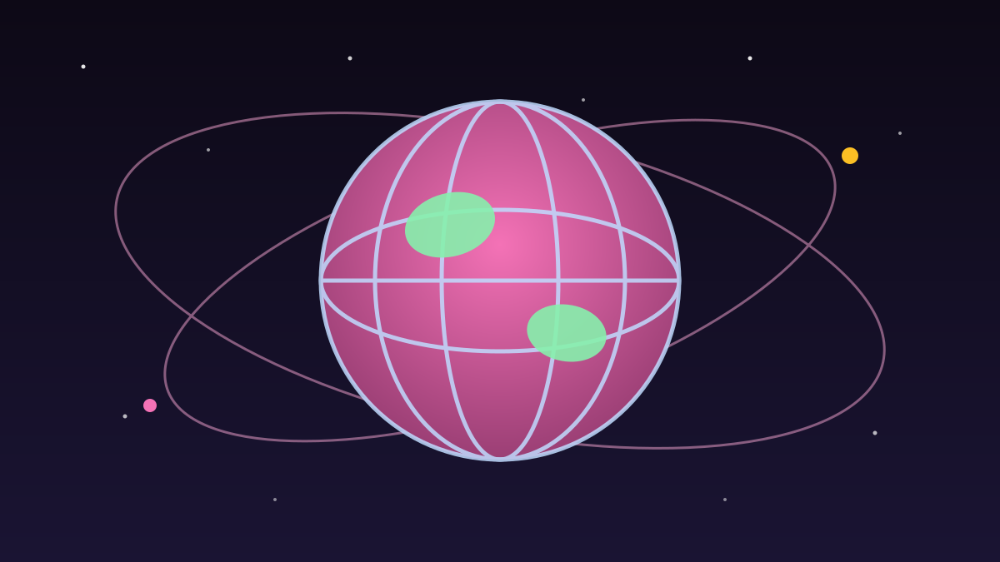

1 / 6

🌍 DUNIA
Hari ini, 11 Oktober: Hari Anak Perempuan Sedunia
PBB kasih tema khusus tahun ini — dan angkanya bikin geleng-geleng kepala. Geser buat spill faktanya 👉
2 / 6
📢
Tema 2026: "End Child Marriage!"
Tahun ini PBB ngangkat tema "End child marriage and invest in girls' rights" — akhiri perkawinan anak, investasikan hak-hak anak perempuan. Tema ini dirumuskan bareng anak perempuan, organisasi perempuan, dan mitra PBB.
Hari ini diperingati tiap 11 Oktober sejak 2012, ditetapkan lewat Resolusi PBB No. 66/170 pada 19 Desember 2011. Tujuannya satu: menyorot tantangan unik yang dihadapi anak perempuan di seluruh dunia.
3 / 6
😢
1 anak dinikahkan tiap 3 detik
Data UNICEF: lebih dari 12 juta anak perempuan menikah sebelum usia 18 setiap tahun — artinya setiap 3 detik ada satu anak dinikahkan. Total, sekitar 650 juta perempuan yang hidup hari ini menikah saat masih anak-anak.
Perkawinan anak memutus sekolah, mengancam kesehatan, dan memperkecil masa depan anak. Tapi ada kabar baik: investasi di pendidikan dan perlindungan berhasil mencegah sekitar 68 juta perkawinan anak dalam 25 tahun terakhir.
4 / 6
📱
Bahaya baru: eksploitasi anak di dunia digital
Laporan UNICEF 3 September 2026 ("Through Children's Eyes") nemuin fakta ngeri: ~20 juta anak usia 12–17 di 21 negara mengalami eksploitasi atau pelecehan seksual berbantuan teknologi dalam satu tahun. Hampir 60% kasus terjadi di media sosial — Facebook, Instagram, TikTok, WhatsApp, Snapchat.
Yang paling sedih: lebih dari 40% kasus tak pernah diceritakan ke siapa pun, dan kurang dari 1% dilaporkan ke polisi. Anak-anak yang terdampak juga dilaporkan 4 kali lebih rentan mengalami pikiran bunuh diri.
5 / 6
🇮🇩
Gimana di Indonesia?
Data BPS 2021: 9,23% perempuan usia 20–24 menikah sebelum 18 tahun — kira-kira 1 dari 11 perempuan. Angka pengajuan dispensasi kawin juga sempat melonjak: 65 ribu kasus di 2020 dan 63 ribu di 2021.
Aturan Indonesia (UU No. 16 Tahun 2019) menetapkan usia minimal menikah 19 tahun. Kemenag terus menekan praktik perkawinan anak lewat KUA dan program pembinaan remaja usia sekolah (BRUS), karena pernikahan dini juga berkaitan dengan angka kematian ibu dan stunting.
6 / 6
🤔
Efeknya ke lo apa?
Buat lo yang masih sekolah atau kuliah: ini soal teman sebaya lo sendiri. Pernikahan dini dan eksploitasi online bisa menimpa siapa aja — termasuk di circle lo. Jadi, jangan pernah normalisasi "nikah muda" sebagai candaan, dan kalau lihat pelecehan di DM atau grup chat, jangan diam.
Share artikel ini ke grup teman lo, dan ingat: anak perempuan berhak sekolah, bermimpi, dan memilih masa depannya sendiri. Dukung yang berani speak up. 💪